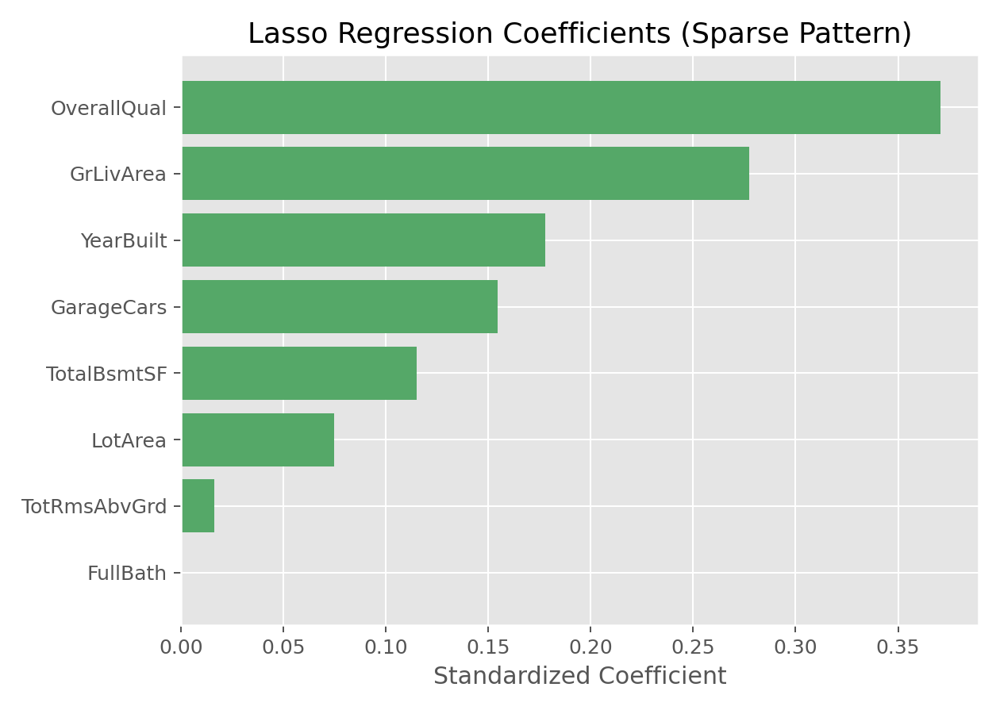

Lasso回归
Lasso回归（Lasso Regression）
方法概览
1.1 一句话本质
Lasso 回归一边拟合连续结局，一边用 L1 惩罚把弱变量的系数直接压到 0，从而得到稀疏模型。
1.2 定义
Lasso 是 Least Absolute Shrinkage and Selection Operator 的缩写。它在最小二乘损失中加入系数绝对值之和的惩罚项，既能做预测，也能做嵌入式变量选择。
1.3 它主要解决什么问题
- 研究问题：候选变量很多时，如何筛出一小组对预测最有用的变量。
- 适用任务：连续结局预测、变量筛选、特征降噪、高维建模。
- 常见医学场景：临床预测模型变量压缩、影像组学特征筛选、组学候选标志物初筛。
1.4 直觉与类比
Lasso 像给变量设置一笔「入场费」。变量只有贡献足够大，才值得付出这笔 L1 惩罚留在模型里；贡献不够的变量，最划算的选择就是把系数设为 0。于是模型会自然变短，读起来也更像一个变量清单。
核心思想与原理
2.1 它到底在解决什么根本困难
高维数据里，候选变量可能远多于真正有信号的变量。普通线性回归会努力给每个变量都分配系数，容易把噪声也解释成信号；逐步回归又依赖离散的进出规则，选择不稳定。Lasso 解决的是：如何在连续优化框架里同时完成拟合和变量选择。
2.2 关键洞察
Lasso 的关键洞察是用 L1 惩罚 $\sum_j|\beta_j|$ 代替 Ridge 的平方惩罚。绝对值函数在 0 点有尖角，这个几何尖角会让优化解更容易正好落在坐标轴上，也就是某些 $\beta_j=0$。因此 Lasso 不只是把系数变小，而是能把一部分变量从模型里移除。
2.3 与朴素/相邻做法的对比
- 相对逐步回归：Lasso 是一个整体优化问题，通常比逐个进出变量更平滑。
- 相对 Ridge回归（Ridge Regression）：Ridge 稳定但不筛变量；Lasso 能得到稀疏解。
- 相对单变量筛选：Lasso 在多变量模型中选择变量，能考虑变量之间的共同预测贡献。
数学形式
3.1 核心公式
Lasso 回归求解：
$$ \hat{\boldsymbol{\beta}}_{\mathrm{lasso}} = \operatorname*{arg\,min}_{\boldsymbol{\beta}} \left[ \sum_{i=1}^{n}(y_i-\mathbf x_i^\top\boldsymbol{\beta})^2 +\lambda\sum_{j=1}^{p}|\beta_j| \right] $$
在特征正交且标准化的简化情形下，Lasso 解是软阈值：
$$ \hat\beta_j=\operatorname{sign}(z_j)\max(|z_j|-\lambda,0), \qquad z_j=(\mathbf X^\top\mathbf y)_j $$
这个式子在说：每个变量的信号先被扣掉一段 $\lambda$；如果扣完小于等于 0，就直接清零。
3.2 推导脉络
- 从最小二乘拟合误差出发，加入绝对值惩罚。
- 惩罚项让每个非零系数都要付出固定边际成本。
- 当变量的边际改善不足以抵消惩罚时，最优解就是 $\beta_j=0$。
- 非正交真实数据中没有这么简单的闭式解，常用坐标下降算法逐个更新系数。
3.3 参数与统计量含义
- $\lambda$：正则化强度，越大保留变量越少。
- L1 惩罚：系数绝对值和，产生稀疏解。
- 非零系数个数：模型复杂度和变量筛选结果的重要指标。
- 交叉验证误差：选择 $\lambda$ 的常用依据。
- 1-SE 规则：在误差接近最优的范围内选更大的 $\lambda$，得到更简单模型。
3.4 关键假设(含违反后果)
| 假设 | 含义 | 违反后会怎样 | 如何粗查 |
|---|---|---|---|
| 线性可加 | 结局与特征可由线性组合近似 | 选出的变量可能只是替代非线性结构 | 残差图、加入变换或样条 |
| 稀疏性近似成立 | 真正有用的变量相对少 | Lasso 可能过度删除 | 比较 Ridge/Elastic Net 性能 |
| 特征尺度可比 | L1 惩罚公平作用于各变量 | 大尺度变量选择偏倚 | 标准化 |
| 训练验证流程独立 | 选参不能看测试集 | 性能过度乐观 | 嵌套交叉验证或保留测试集 |
| 相关结构可接受 | 高度相关变量中只选一个也能接受 | 选择不稳定，解释困难 | 相关矩阵、稳定性选择 |
手把手算例
沿用 Ridge回归（Ridge Regression） 的同一组标准化正交特征：
$$ \mathbf X^\top\mathbf X=\mathbf I,\qquad \mathbf X^\top\mathbf y=(3,\ 0.8,\ 0.3) $$
普通 OLS 系数为 $(3,\ 0.8,\ 0.3)$。现在做 Lasso，取 $\lambda=1$。
Step 1：写出软阈值公式。
$$ \hat\beta_j=\operatorname{sign}(z_j)\max(|z_j|-1,0) $$
Step 2：逐个变量计算。
- $x1$：$z_1=3$，$\hat\beta_1=3-1=2$。
- $x2$：$z_2=0.8$，$\hat\beta_2=\max(0.8-1,0)=0$。
- $x3$：$z_3=0.3$，$\hat\beta_3=\max(0.3-1,0)=0$。
所以：
$$ \hat{\boldsymbol\beta}_{\mathrm{lasso}}=(2,\ 0,\ 0) $$
Step 3：和 Ridge 对照。
同样 $\lambda=1$ 时，Ridge 得到 $(1.5,\ 0.4,\ 0.15)$，三个变量都保留；Lasso 得到 $(2,\ 0,\ 0)$，只留下最强的 $x1$。
结论： Lasso 的动作是「扣门槛再清零」。它很适合从大量候选变量中筛出少数变量，但对弱信号和相关变量组会更激进。
数据形式与输入输出
5.1 适合的数据形式
- 自变量类型：连续变量、哑变量编码后的分类变量、高维特征。
- 因变量类型：连续型；也可扩展为 Logistic Lasso、Cox Lasso。
- 数据结构：宽表数据，每行一个样本，每列一个候选特征。
- 是否适合高维数据：适合，尤其是候选变量多且希望稀疏筛选时。
- 是否适合缺失较多数据：需先处理缺失，避免筛选结果受缺失模式影响。
- 是否适合删失数据：普通 Lasso 不适合；需正则化 Cox。
- 是否适合重复测量数据：不直接适合；需专门纵向或混合模型扩展。
5.2 示例表格
| OverallQual | GrLivArea | GarageCars | TotalBsmtSF | YearBuilt | SalePrice |
|---|---|---|---|---|---|
| 7 | 1710 | 2 | 856 | 2003 | 208500 |
| 6 | 1262 | 2 | 1262 | 1976 | 181500 |
| 7 | 1786 | 2 | 920 | 2001 | 223500 |
| 7 | 1717 | 3 | 756 | 1915 | 140000 |
| 8 | 2198 | 3 | 1145 | 2000 | 250000 |
5.3 输入与产出
输入
- 输入数据：连续结局和候选特征矩阵。
- 关键变量：$\lambda$ 或软件中的
alpha。 - 需要预处理的内容：缺失处理、分类变量编码、标准化、训练/验证划分。
产出
- 模型对象/统计结果：最佳 $\lambda$、非零系数列表、截距。
- 参数估计：被保留变量的收缩系数，以及被压成 0 的变量。
- 预测结果：连续型预测值。
- 不确定性指标：交叉验证误差、测试集误差、稳定性选择频率。
适用场景
- 适合：候选变量很多、希望自动筛选、目标是简洁预测模型。
- 不适合：希望保留一组高度相关变量；变量选择结果必须非常稳定；主要目标是无偏因果估计。
- 使用前需要特别检查的点：标准化、相关变量组、$\lambda$ 选择、变量选择稳定性。
实现
常用包:
scikit-learn
from sklearn.linear_model import LassoCV
from sklearn.pipeline import make_pipeline
from sklearn.preprocessing import StandardScaler
model = make_pipeline(
StandardScaler(),
LassoCV(cv=5, max_iter=20000, random_state=1)
)
model.fit(X_train, y_train)
lasso = model.named_steps["lassocv"]
coef = lasso.coef_
selected = X_train.columns[coef != 0]
print(lasso.alpha_)
print(selected.tolist())
常用包:
glmnet
library(glmnet)
x <- model.matrix(SalePrice ~ . - 1, data = train_df)
y <- train_df$SalePrice
fit <- cv.glmnet(x, y, alpha = 1, standardize = TRUE)
coef(fit, s = "lambda.min")
coef(fit, s = "lambda.1se") # 更稀疏的 1-SE 模型
结果如何解读
- 核心结果看什么：最佳 $\lambda$、非零系数数量、保留变量是否有领域合理性、测试集性能。
- 每个主要参数如何解读：非零系数表示变量在当前惩罚强度下被选中，方向可解释，但大小已被收缩。
- 临床或医学意义如何表达：适合说「该变量被模型稳定选入预测集合」，不宜直接说「该变量是独立因果因素」。
- 常见误读：系数为 0 不代表变量完全无科学意义，只代表在当前数据、候选集和 $\lambda$ 下未被选中。
假设诊断与稳健性
- 变量选择稳定性：重复交叉验证、bootstrap 或稳定性选择，观察变量入选频率。
- 相关变量组：查看相关矩阵；若 Lasso 在相关变量中随机选一个，可考虑 Elastic Net。
- 选参稳健性：比较
lambda.min和lambda.1se下的变量数量与性能。 - 外部验证：稀疏模型也需要独立数据验证，防止筛选过拟合。
- 数据泄漏：筛选、标准化、调参必须只在训练流程内完成。
推荐可视化
- 系数路径图：看变量何时进入或退出模型。
- 交叉验证误差曲线：展示最优 $\lambda$ 与 1-SE $\lambda$。
- 非零系数条形图：展示入选变量方向和相对大小。
10.1 图像示例
下图展示 Lasso 回归得到的稀疏系数分布，能直观看到哪些变量被保留、哪些变量被压缩到接近 0。

优势、局限与常见坑
优势
- 自动完成变量选择，模型更简洁。
- 适合高维候选特征筛选。
- 与交叉验证、坐标下降算法结合成熟，计算高效。
局限
- 在高度相关变量组中选择不稳定。
- 系数有偏，入选变量的后续推断需谨慎。
- 当真实信号并不稀疏时，可能预测不如 Ridge。
常见坑
- 不标准化就做 Lasso，导致惩罚不公平。
- 把入选变量当成无需验证的临床因子。
- 在同一数据上筛选变量、评估性能并报告过于乐观的结果。
- 忽略相关变量组，过度解释「为什么只选了 A 没选 B」。
与相近方法的区别
- 和 Ridge回归（Ridge Regression） 的区别：Lasso 能清零，Ridge 只收缩。
- 和 弹性网络回归（Elastic Net Regression） 的区别：Elastic Net 加入 L2 惩罚，更适合相关变量组。
- 和逐步回归的区别：逐步回归是离散搜索，Lasso 是带惩罚的连续优化。
- 如何选择：想要简洁变量清单时用 Lasso；相关变量很多且希望成组稳定时用 Elastic Net。
医学研究中的典型应用
- 从大量临床变量中筛选预测住院时长、费用或连续评分的候选因素。
- 影像组学和组学数据的初步特征筛选。
- 构建简洁的临床预测评分前，压缩候选变量集合。
关键术语
- L1 惩罚（L1 Penalty）：对系数绝对值之和进行惩罚，能产生精确 0。
- 稀疏模型（Sparse Model）：只有少数变量系数非零的模型。
- 软阈值（Soft Thresholding）：先扣掉阈值，再把不足阈值的系数清零。
- 坐标下降（Coordinate Descent）：逐个系数更新，求解 Lasso 的常用算法。
- 1-SE 规则（One-Standard-Error Rule）：选误差在最小值 1 个标准误内且更简单的模型。
- 稳定性选择（Stability Selection）：多次重采样评估变量入选频率的方法。
- 嵌入式特征选择（Embedded Feature Selection）：在模型训练过程中同时完成变量选择。
相关方法
参考资料
- Tibshirani R. Regression shrinkage and selection via the lasso. J R Stat Soc Series B. 1996;58(1):267-288.
- Hastie T, Tibshirani R, Friedman J. The Elements of Statistical Learning. 2nd ed. Springer; 2009.
- James G, Witten D, Hastie T, Tibshirani R. An Introduction to Statistical Learning. 2nd ed. Springer; 2021.
- Friedman J, Hastie T, Tibshirani R. Regularization paths for generalized linear models via coordinate descent. J Stat Softw. 2010;33(1):1-22.